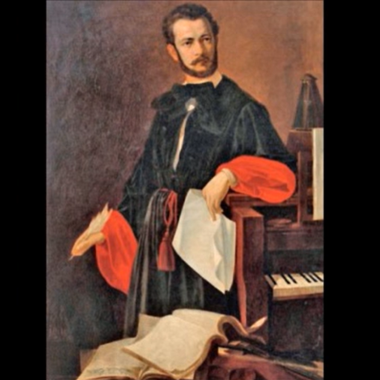
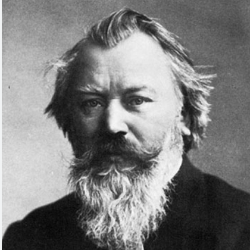
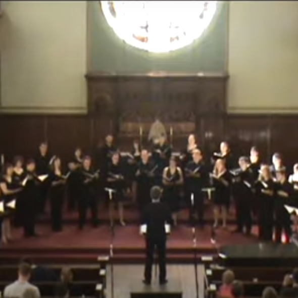

1. ÐевоÑка ÑÑÐ½Ð°ÐºÑ Ð¿ÑÑÑен повÑаÑала
1 Une fille rendait à son ami sa bague
(Trinaesta Rukovet - 13ème guirlande :00:00 - 02:55)

Basilic, absinthe, romarin - ÐоÑиÑак, пелен, ÑÑзмаÑин
|
|
|
|
|
Version Mokranjac de "Devojka junaku" Collecté par Vuk KaradžiÄ (1787- 1864) (1) |
 SrÄan AsanoviÄ chante "Devojka junaku" Mélodie de Kornelje StankoviÄ (1831-1865) (2) |
 Johannes Brahms (1833-1897) Mélodie de "Rosmarin" (3) |
 Le choeur âWickar Park" Chante "Rosmarin (3) |
NOTES
|
[1] ÐзвоÑ: "СÑпÑке наÑодне пÑеÑме, ÑкÑпио иÑ
и на ÑвÑÐµÑ Ð¸Ð·Ð´Ð°Ð¾ ÐÑк СÑеÑÐ°Ð½Ð¾Ð²Ð¸Ñ ÐаÑаÑиÑ, кÑига пÑва, Ñ ÐºÐ¾ÑÐ¾Ñ ÑÑ ÑазлиÑне женÑке пÑеÑме, дÑжавно издаÑе, ÐиогÑад, ШÑампаÑиÑа ÐÑаÑевине СÑбиÑе, 1891, ÑÑÑ. 454-455." ÐеÑÑÑим, поÑÑоÑи много ваÑиÑанÑи пÑеÑзеÑиһ из ÑÑаÑиÑиһ пÑбликаÑиÑа, од коÑиһ Ñедна, иÑÑог аÑÑоÑа, даÑиÑа из 1841. године: ÐÑк СÑеÑ. ÐаÑаÑиÑ, »СÑпÑке наÑодне пÑеÑме: T I. ÐеÑ, 1841., бÑ. пÑеÑме: 609 (»ÐеÑÑеÑна дÑевоÑка«). ÐоÑеÑни ÑÑÐ¸Ñ : »ÐевоÑка ÑÑÐ½Ð°ÐºÑ Ð¿ÑÑÑен повÑаÑала«. ÐиÑе ознаÑено оÑкÑда Ñе. Ðалеко заоÑÑаÑе за ÑлиÑним запиÑом из ÐÑкове збиÑке. СвÑаÑаÑÑ Ð½Ð° Ñе пажÑÑ Ð¾Ð²Ðµ ÑиÑеÑи: »наÑмлаÑжа« и »пÑлин«. ÐÑÑале ваÑиÑанÑе ÑакÑпÑане ÑÑ Ñ ÐеÑÑиÑи (Ð´Ð°Ð½Ð°Ñ Ñ Ð ÐµÐ¿ÑблиÑи СÑпÑкоÑ), на оÑÑÑÐ²Ñ XÐ²Ð°Ñ Ð¸ дÑÑгим икавÑким говоÑним подÑÑÑÑима, где Ñе инÑÐ¸Ð¿Ð¸Ñ Ð½Ð°ÑÑеÑÑе "ÐивоÑка ÑÑнакÑ", а понекад и "ТÑжна Ñа ÑиÑоÑа" или " ÐаÑеÑак Ñан ÑиÑала". [2] ÐелодиÑÑ Ð¾Ð²Ðµ пеÑме ÑÑаглаÑио Ñе ÐоÑнелиÑе СÑÐ°Ð½ÐºÐ¾Ð²Ð¸Ñ (1831-1865), аÑÑÐ¾Ñ ÑеÑÑ Ñвезака. âСÑпÑкиһ мелодиÑа за певаÑе и клавиÑâ обÑавÑениһ измеÑÑ 1858. и 1863. ЧÑÑемо Ñе изнад, Ñ Ð¸Ð·Ð²Ð¾ÑеÑÑ Ð¡ÑÑана ÐÑановиÑа Ñз пÑаÑÑÑ ÐºÐ»Ð°Ð²Ð¸Ña ÐаÑмина ÐанковиÑ. Ðна има намеÑÑивиÑи оÑиÑенÑални каÑакÑÐµÑ Ð½ÐµÐ³Ð¾ Ñ ÐµÐ»ÐµÐ³Ð¸Ñи коÑÑ Ñе компоновао СÑеван ÐокÑаÑаÑ. [3] Симболика ÑвеÑа ниÑе ÑпеÑиÑиÑна за ÑÑпÑÐºÑ ÑÑадиÑиÑÑ. У ÐемаÑÐºÐ¾Ñ ÑÑ ÐÐ»ÐµÐ¼ÐµÐ½Ñ ÐÑенÑано и Ðxим Ñон ÐÑним Ñ ÑвоÑÐ¾Ñ Ð·Ð±Ð¸ÑÑи âÐÐµÑ Ðнабен ÐÑндеÑһоÑнâ обÑавÑÐµÐ½Ð¾Ñ Ð¸Ð·Ð¼ÐµÑÑ 1805. и 1808. ÑгоÑÑили пеÑÐ¼Ñ ÐºÐ¾ÑÑ Ñе ÐÐ¾Ò»Ð°Ð½ÐµÑ ÐÑÐ°Ð¼Ñ ÑÑкладио. То Ñе âРоÑмаÑинâ (PyзмаÑин, оп. 62, бÑ. 1, 1873-1874) где ова биÑка има иÑÑи погÑебни знаÑÐ°Ñ ÐºÐ°Ð¾ и пeлeн код ÐаÑаÑиÑа. Ðе изненаÑÑÑе, Ñ Ð¾Ð±Ð·Ð¸Ñом на Ð¾Ð²Ñ ÑемаÑÑÐºÑ Ð±Ð»Ð¸Ð·Ð¸Ð½Ñ, да Ñе ÑекÑÑ Ð²ÐµÑ 1835. на немаÑки Ñезик пÑевела ТеÑеза ÐлбеÑÑинa ÐÑиза вон Ðакоб (1797-1870) Ñ Ñвоjим "СÑпÑке наÑодне пеÑмеââ Ñом 2. под наÑловом âHеÑÑеÑнÑa невеÑÑaâ . ÐÑзиÑиÑао ÑÑ Ñе 1875. ÐÑлиÑÑÑ XеÑман ÐÑÐ¸Ð³Ð°Ñ (1819 - 1880) Ñ "ÐеÑмÑÑÑ", оп. 35, Ñиме Ñе завÑÑава ÑиклÑÑ Ð¾Ð´ ÑеÑÑ Ð¿ÐµÑама за за певаÑе и клавиÑ. Ðе зна ce да ли Ñе ÐÑигаÑова мелодиÑа везана за ÐокÑаÑÑевÑ. |
[1] Ce morceau est tiré des " Chants populaires serbes, recueillis et offerts au monde par Vuk StefanoviÄ KaradžiÄ, tome I où sont publiés divers chants de femmes, Belgrade, Imprimerie du Royaume de Serbie, 1891, pp. 454-455". Il en existe de nombreuses variantes, tirées de publications plus anciennes dont une, du même auteur, date de 1841: Vuk S. KaradžiÄ: Chants populaires serbes, T. I, Vienne, 1841, chant N°609, "La jeune fille malheureuse" avec le même incipit et sans indication d'origine. Le relevé manuscrit est bien plus ancien et on y relève les formes dialectales »наÑмлаÑжа« (très jeune) et »пÑлин« (absinthe). Les autres variantes ont été collectées à Petrinja (aujourd'hui en République serbe de Bosnie), dans l'Ãle de Hvar et dans d'autres régions de parler "ikavien" où l'incipit est le plus souvent "ÐивоÑка ÑÑнакÑ" et parfois »ТÑжна Ñа ÑиÑоÑа« (Je suis triste et malheureuse) ou "ÐаÑеÑак Ñан ÑиÑала" (J'avais semé du basilic). [2] La mélodie de ce chant a été harmonisée par Kornelije StankoviÄ (1831-1865), auteur de 6 volumes de "Mélodies serbes pour chant et piano" parus entre 1858 et 1863. On l'entend ci-dessus, interprêtée par SrÄan AsanoviÄ accompagné au piano par Jasmina JankoviÄ. Elle a un caractère oriental plus affirmé que dans la l'élégie composée par Stevan Mokranjac. [3] La symbolique des fleurs n'est pas propre à la tradition serbe. En Allemagne, Clemens Brentano et Achim von Arnim dans leur recueil "Des Knaben Wunderhorn" publié entre 1805 et 1808 ont accueilli un chant que Johannes Brahms a harmonisé. Il s'agit de "Rosmarin" (Le romarin, op. 62, N°1, 1873-1874) où cette plante à la même signification funèbre que l'absinthe chez KaradžiÄ. Il n'est pas étonnant, étant donné cette proximité thématique que le texte fût traduit en allemand dès 1835, par Therese Albertine Luise von Jacob 1797-1870) dans ses "Volkslieder der Serben" Tome 2. sour le titre "Die unglückliche Braut ". Il fut mis en musique en 1875 par Julius Hermann Krigar (1819 - 1880) dans "Wermuth", op. 35, qui conclut un cycle de six chants pour soliste et Pianoforte. J'ignore si la mélodie de Krigar est apparentée à celle de Mokranjac. |

ÐÑномÑзиколог, пÑÐµÐ²Ð°Ñ Ð¸ поÑÐ°Ñ Ð¡ÑÑан ÐÑановиÑ
13 Rukovet